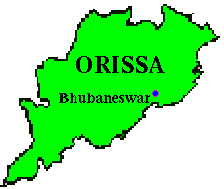
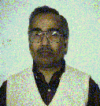

ORISSA

___________________________________________________________________________ In 1950's first of the few oriyas may have set foot in U.S.A. By the time OSA was formed anly a handful, 20 or 30, may have been members. Now after close to 40 years since the first arrival,the number of families constituting OSA is around 600 including all the students whereas some of our Indian counterparts for example from Andhra or Gujurat may be numbering more than 1,000,000, a strong force by any statistics. All of us who are here are some what different from our brothers and sisters in Orissa. We wanted to experiment life in an advent- uristic way in an entirely new world and each of us in their own expectations and in their field of endeavour have achieved their objectives having excelled at times. There are people amongst us who have excelled in their field of education, science, medicine, literature, engineering etc. As we have settled in this wonderful dextrous community in U.S.A we must admit that in each setting we must learn to pick up the best in everybody. For example for each town in USA, there is an United Way organization which raises fund to cater to the needs of elderly, blind, abused women, children and homeless persons. In USA when an individual donates to charity he or she does not think of name recognition, rather they enthrall themselves in caring or sharing their good fortunes for betterment of those who are not so fortunate. In India we have a different philosophy. We always enjoy enrich- ing the "self" and when that is complete we look to enriching our children and grand-children. We seldom come out to share our fortune or amenitieswith others who are total strangers and are not so lucky to have any choices in their lives. The vision of sharing with and helping someone we do not know should enrich us in two ways; 1. The person who get help may in turn get stimulated to help others. 2. Any little help we extend to the community we left behind helps us to repay the debt we owe to our motherland which spent all its money and energy in our attaining the present status through educational and social support. In USA the persons or organizations who share in the community projects allot 1-5% of their annual income towards such charities; some even with as much as 10% to their churches. If each of the existing members of OSA assumed that may be each month we spend $5 unknowingly and save that amount each month towards helping an organization in Orissa, each member (a student/established family) could save $60 a year amounting to $36,000 from 600 families. At the current exchange rate, this amount to nearly Rs.1,080,000, a great effort by present standard. The OSA even though organized since 1970s and we have celebrated our 25th anniversary, is constitutionally limited in ways that may bring direct benefit for Orissa without violating IRS statutes. Further there are two other problems: 1. Many of the OSA members think that if we came and settled here then what is the point to look back towards Orissa. I feel that having attained what each of us have, let us take pride in and share the knowledge, money, energy with our motherland at least 10% towards betterment of our folks in whichever small way possible. In our mind and spirit, and at the end of the road in our lives each of us will feel content about the purpose of serving other outside our own family and thus making their lives better. 2. In certain areas, donation sent to individual or organizations in Orissa would get lost or unaccounted for. But there are also organizations or individuals in USA and Orissa, who unflinchingly and unselfishly have and are willing to set highest goal and objectives in furthering highest attainment in exploring Orissan art and culture. There are others who with their monumental single handed efforts, are addressing to identify social ills in different ways to better the lives of the unfortunate lot. Please take a moment of your time to see whether any of these endeavours interest you, or excite your benevolence. THE ORGANIZATIONS NEEDING YOUR SUPPORT :- 1. The Physician sister Dr.Mahamaya Patnaik (one of my esteemed teacher) and Dr.Jogmaya Patnaik have made a pioneering effort to deal with the social issues (facing our state) head on. The three agencies they have been nurturing are - A. BASUNDHARA - An orphanage consisting of 150 or more children. housed now in a two-storeyed building in Bidanasi, Cuttack, is donated by citizens of Cuttack. Some children are already adopt- ed by some Scandinavian countries. Their need include clothes, money, medicine, toys and books. Volunteers are required to contact USA adoption agencies on behalf of BASUNDHARA. B. UDAYABHANU - This center for troubled youth gives counselling for drug and alcohol addiction, an increasing social problem in Orissa. C. ASTARAGA - Housing elderly (abused and neglected by their own families), homeless persons, and providing them in the shelter with basic medical care and necessities of life. Involvement may be directly possible with - BASUNDHARA orphanage In USA - Dr.Mahamaya Patnaik or Sulekha (201/428-2460) Bidanasi, Cuttack Pratap (301/972-1859) 2. SCHOOL FOR HOMELESS CHILDREN: In Berhampur, Orissa, 65 children are taught full time, learning basic educational skill, health hygiene environement. Focus of the school being to eradicate illeteracy. This is an ambitious project founded by Ms.Gitanjali Nayak, Professor of Anthropology, presently at B.J.B.College, Bhubaneswar. Please contact Sulekha Das in USA. 3. SPECIAL OLYMPICS: School of physically handicapped children started in 1988 in the campus of Shishu Bhaban, Cuttack. Now it has branched out into three other Children's Hospital. They need ideas, suggestions and volunt- eering. Please contact - Dr.Khitish Mohanty, Or, in USA - Shishu Bhaban, Chandni Chowk, Sulekha Das Cuttack - 753002 4. INSTITUTE OF ORISSAN CULTURE: Located in BBSR, this is the brain child of professionals endeavouring in history, archealogy and culture in Orissa. In 1993, it had organized a seminar on Buddhisim in Orissa. It has published a book on Saivism. It has plans to publish treatises and books on Jagannath culture and tribal history of Orissa. The eminent panel is headed by Prof. Kanhu C. Mishra. It requires financial help to organize seminars and help publish author- itative treatises in order to propagate Orissan Culture in Indian and International avenue. Direct correspondence is possible with - Prof. K.C. Mishra In USA, please contact - Director of Institute of Orissan Culture Dr.Devi P. Mishra 2130/4158 Vivekananda Marg (205) 883-5499 Bhubaneswar, Orissa 751002 5. ORISSA DANCE ACADEMY: Founded and molded into the leading organization for carrying out the tradition of Odissi dance and music under expert guidance of Guru Gangadhar Pradhan. Every year the annual dance festival is organized in different parts of Orissa to create artistic and cultural awareness. Its rural counterpart, Konark Natya Mandap is located one mile to the west of Konark temple. Apart from causing awareness reguarding Orissan art and culture amongst rural public, Konark Dance and Music Festival presents colourful cultural shows to perform under the moonlit night. Plesae contact:- Guru Gangadhar Pradhan In USA, please contact:- Orissa Dance Academy Center for World Music 78 Kharavela Nagar Unit-3 Purna & Gopa Patnaik (619) 436-8277 Bhubaneswar, Orissa 751001 Sulekha Das (201) 428-2460 Phone: (674)-408494 6. CHAKAA AKHI: Founded by the oriya in the Singhbhoom district of Bihar, this organization is striving to maintain the Oriya culture for the future generations. In addition, it is also attempting to keep the oriyas in Orissa informed about the happenings in the Sareikala and Kharsuan area. Those of us who have come from border areas recognize how hard it is to preserve and practice own culture and traditions in the face of govermental apathy and often social repression. Any one who has heard the famous CHHAU DANCE should know that its origin is in this part of Orissa which was lost to Bihar during reorganization. Chakaa Akhi is requesting oriyas of all persuasion to support its effort through generous donation. Chakaa Akhi is represented in USA by IAFF. In addition to the above organizations working hard to change the fate of Orissa at grass root level, there are several organizations in USA, who are active toward achieving similar goals. If you find it's difficult or time consuming to get involved directly with organizations in Orissa, you should consider supporting the activities of the following organizations in USA. 1. IPAG (Indian Progressive Action Group) This worthy organization is vigorously involved in fighting hunger, poverty and illiteracy throughout India. In Orissa, it is spear- heading efforts to alleviate hunger in the Kalahandi Bolangir area. Similar efforts have been undertaken in the past in Koraput district. Mr.Priya Darshan Patra of Austin, Texas is the contact person for this organization. In addition, Dr. Lalu Mansingh of Canada is also actively participating in these efforts. He can also be contacted for further information.[Currently known as SEEDS : Sustainable Economic and Educational Development Society] 2. PRAGATI This organization is functioning out of Boston. Its current organizers are not known. But it has undertaken activities in Orissa in the past. 3. TREES FOR LIFE This organization's goal is to plant 100 million fruit trees in India in this decade. It has already planted 14 million plants to date. It accepts direct donations in addition to raising funds through T-shirt sale. It publishes a newsletter called "Growth Update" in english in addition its "Brukhya hin Jeebana" news- letter published in Oriya. Its headquarter address is:- Trees for Life Branch in Sambalpur:- 1103 N.Jefferson Pattanayak Pada Wichita, KS 67203 Sambalpur, Orissa 768001 4. IAFF (Indo-American Friendship Foundation) This organization is dedicated towards helping Orissa in the areas of Health Care, Education and Agriculture through collaboration with various edcational institutions in Orissa. IAFF is program- based organization without any provision for membership. Anyone is eligible to sponsor projects in the areas listed. It has several projects in progress in Orissa. For more detailed information, IAFF can be contacted at IAFF, 1413 Boxwood Lane, Apex, NC 27502.
In Search Of a Helping Hand A Critical Analysis by Dr. Devi P. Mishra
--
Your comments are always welcome...

Devi P. Mishra, MD. FACP.
1001, Brookridge Circle
Huntsville, AL 35801
Parents:
Mr. G.K.Misra and Mrs. Sita Misra, Cuttack, Orissa
Education:
1958 - Revenshaw Collegiate School, Cuttack
1958-60 - G.M.College, Sambalpur
1960-66 - MBBS, Utkal University
1967-69 - MD, Patna University
Positions:
1966-67 - Rotating Housestaff, SCB Medical College Hospital
1970-73 - Clinical Tutor/Registrar, SCB Medical College Hospital
1973-74 - Senior House Officer in Genatrics, St.Mary's Hospital, Kettering, UK
1974-77 - Intern and Resident in Med PGGH, Cheverly, Maryland, USA
1977-79 - Pulmonary Medical Fellow, University of Missouri
1979-80 Instructor in Pulmonary Medicine, University of Missouri
1980-present - Practice of Internal and Pulmonary Medicine, Huntsville, Alabama
Honors:
American Board of Internal Medicine
1983 Fellow of American Center of Physicians
1982-84 Chief of Medicine, Crestwood Hospital, Huntsville, Alabama
Involvement:
Dr.Devi Misra is actively involved with various charitable
organization both in India and USA. He contributes to United Way,
Downtown Hope, a center for homeless people in Huntsville. He
also helps SEEDS, Guru Gangadhar Pradhan and his Orissa Dance
Academy and Prof. K.C.Mishra and his Institute of Orissan Culture
in Bhubaneswar. The last two organizations are dedicated to
preserve and propagate Orissan art and culture around the globe.


| This Page Has Been Accessed | Times Since |
|---|
was last updated on :